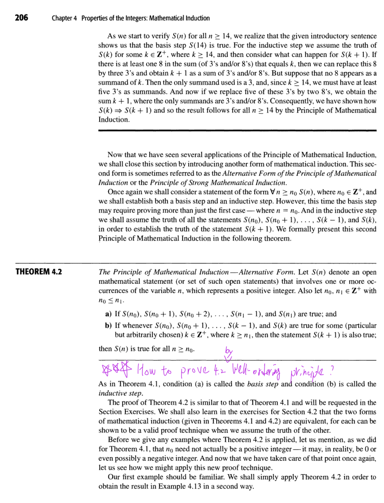
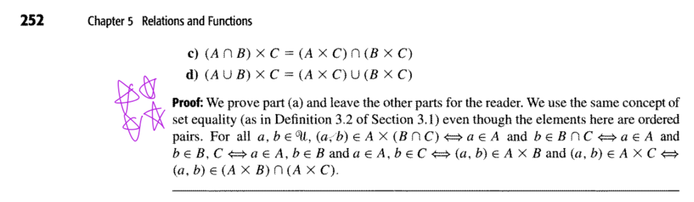

老師打星星的重點
原圖


離散數學｜小考重點證明筆記（中英文版）
每題包含 題目敘述（英文＋中文）、老師提示、中文版證明、英文版證明。證明採用簡短、正確、容易在考試默寫的版本。
以下題目敘述依課本定理整理；老師提示依據上課逐字稿。不代表老師已公布小考原題。
1. Theorem 4.2 — Mathematical Induction
課本 p.206｜10/2 上課
老師提示： 重要證明題，使用 Well-Ordering Principle（良序原理）。課本 Exercise 4.1 第 27 題為 Verify Theorem 4.2.
1.1 題目敘述
English:
Prove Theorem 4.2 using the Well-Ordering Principle.
Let \(n_0,n_1\in\mathbb Z^+\), \(n_0\le n_1\). Suppose:
- \(S(n_0),\ldots,S(n_1)\) are true.
- For every \(k\ge n_1\), if \(S(n_0),\ldots,S(k)\) are true, then \(S(k+1)\) is true.
Prove that \(S(n)\) is true for all \(n\ge n_0\).
中文：
利用良序原理證明：若從 \(S(n_0)\) 到 \(S(n_1)\) 皆成立，且對每個 \(k\ge n_1\)，前面全部成立可推出 \(S(k+1)\) 成立，則所有 \(n\ge n_0\) 的 \(S(n)\) 皆成立。
1.2 中文版證明
反設存在 \(n\ge n_0\) 使 \(S(n)\) 不成立。
由良序原理，令 \(m\) 為最小反例。
由基礎步驟，\(m>n_1\)。
由最小性，\(S(n_0),\ldots,S(m-1)\) 皆成立。
因 \(m-1\ge n_1\)，由歸納步驟得 \(S(m)\) 成立，矛盾。
故 \(S(n)\) 對所有 \(n\ge n_0\) 皆成立。
為何 \(m>n_1\) ？
因為 n0 和 n1 都已經確定是 True 了，所以 m > n0 , n1
1.3 English Proof
Suppose \(S(n)\) is false for some \(n\ge n_0\).
By the Well-Ordering Principle, let \(m\) be the smallest such \(n\).
By the basis step, \(m>n_1\).
By minimality, \(S(n_0),\ldots,S(m-1)\) are true.
Since \(m-1\ge n_1\), the inductive step gives \(S(m)\), a contradiction.
Thus \(S(n)\) is true for all \(n\ge n_0\).
2. Theorem 5.1 — Cartesian Product Distributive Laws
課本 pp.251–252｜10/16 上課
老師提示： 要會證明分配律，尤其是 (a)。逐字稿補註 (a) 的證明有星號標記；該補註不是老師錄音原句。
2.1 題目敘述
English:
Prove the following identities for any sets \(A,B,C\).
中文：
證明任意集合 \(A,B,C\) 滿足以下四個笛卡兒積分配律。
\[
\boxed{ \begin{aligned} \text{(a)}\quad& A\times(B\cap C)=(A\times B)\cap(A\times C)\\[6pt] \text{(b)}\quad& A\times(B\cup C)=(A\times B)\cup(A\times C)\\[6pt] \text{(c)}\quad& (A\cap B)\times C=(A\times C)\cap(B\times C)\\[6pt] \text{(d)}\quad& (A\cup B)\times C=(A\times C)\cup(B\times C) \end{aligned} }
\]
2.2 中文版證明
證明： 任取有序對 \((x,y)\)。
(a)
\[
\begin{aligned} &(x,y)\in A\times(B\cap C)\\[5pt] \iff\;&x\in A\land y\in(B\cap C)\\[5pt] \iff\;&x\in A\land(y\in B\land y\in C)\\[5pt] \iff\;&(x\in A\land y\in B)\\\ &\quad\land(x\in A\land y\in C)\\[5pt] \iff\;&(x,y)\in A\times B\\\ &\quad\land(x,y)\in A\times C\\[5pt] \iff\;&(x,y)\in(A\times B)\cap(A\times C). \end{aligned}
\]
故
\[ A\times(B\cap C)=(A\times B)\cap(A\times C). \]
(b)
\[
\begin{aligned} &(x,y)\in A\times(B\cup C)\\[5pt] \iff\;&x\in A\land y\in(B\cup C)\\[5pt] \iff\;&x\in A\land(y\in B\lor y\in C)\\[5pt] \iff\;&(x\in A\land y\in B)\\\ &\quad\lor(x\in A\land y\in C)\\[5pt] \iff\;&(x,y)\in A\times B\\\ &\quad\lor(x,y)\in A\times C\\[5pt] \iff\;&(x,y)\in(A\times B)\cup(A\times C). \end{aligned}
\]
故
\[ A\times(B\cup C)=(A\times B)\cup(A\times C). \]
(c)
\[
\begin{aligned} &(x,y)\in(A\cap B)\times C\\[5pt] \iff\;&x\in(A\cap B)\land y\in C\\[5pt] \iff\;&(x\in A\land x\in B)\land y\in C\\[5pt] \iff\;&(x\in A\land y\in C)\\\ &\quad\land(x\in B\land y\in C)\\[5pt] \iff\;&(x,y)\in A\times C\\\ &\quad\land(x,y)\in B\times C\\[5pt] \iff\;&(x,y)\in(A\times C)\cap(B\times C). \end{aligned}
\]
故
\[ (A\cap B)\times C=(A\times C)\cap(B\times C). \]
(d)
\[
\begin{aligned} &(x,y)\in(A\cup B)\times C\\[5pt] \iff\;&x\in(A\cup B)\land y\in C\\[5pt] \iff\;&(x\in A\lor x\in B)\land y\in C\\[5pt] \iff\;&(x\in A\land y\in C)\\\ &\quad\lor(x\in B\land y\in C)\\[5pt] \iff\;&(x,y)\in A\times C\\\ &\quad\lor(x,y)\in B\times C\\[5pt] \iff\;&(x,y)\in(A\times C)\cup(B\times C). \end{aligned}
\]
故
\[ (A\cup B)\times C=(A\times C)\cup(B\times C). \]
2.3 English Proof
Proof. Let \((x,y)\) be an arbitrary ordered pair.
(a)
\[
\begin{aligned} &(x,y)\in A\times(B\cap C)\\[5pt] \iff\;&x\in A\land y\in(B\cap C)\\[5pt] \iff\;&x\in A\land(y\in B\land y\in C)\\[5pt] \iff\;&(x\in A\land y\in B)\\\ &\quad\land(x\in A\land y\in C)\\[5pt] \iff\;&(x,y)\in A\times B\\\ &\quad\land(x,y)\in A\times C\\[5pt] \iff\;&(x,y)\in(A\times B)\cap(A\times C). \end{aligned}
\]
Therefore,
\[ A\times(B\cap C)=(A\times B)\cap(A\times C). \]
(b)
\[
\begin{aligned} &(x,y)\in A\times(B\cup C)\\[5pt] \iff\;&x\in A\land y\in(B\cup C)\\[5pt] \iff\;&x\in A\land(y\in B\lor y\in C)\\[5pt] \iff\;&(x\in A\land y\in B)\\\ &\quad\lor(x\in A\land y\in C)\\[5pt] \iff\;&(x,y)\in A\times B\\\ &\quad\lor(x,y)\in A\times C\\[5pt] \iff\;&(x,y)\in(A\times B)\cup(A\times C). \end{aligned}
\]
Therefore,
\[ A\times(B\cup C)=(A\times B)\cup(A\times C). \]
(c)
\[
\begin{aligned} &(x,y)\in(A\cap B)\times C\\[5pt] \iff\;&x\in(A\cap B)\land y\in C\\[5pt] \iff\;&(x\in A\land x\in B)\land y\in C\\[5pt] \iff\;&(x\in A\land y\in C)\\\ &\quad\land(x\in B\land y\in C)\\[5pt] \iff\;&(x,y)\in A\times C\\\ &\quad\land(x,y)\in B\times C\\[5pt] \iff\;&(x,y)\in(A\times C)\cap(B\times C). \end{aligned}
\]
Therefore,
\[ (A\cap B)\times C=(A\times C)\cap(B\times C). \]
(d)
\[
\begin{aligned} &(x,y)\in(A\cup B)\times C\\[5pt] \iff\;&x\in(A\cup B)\land y\in C\\[5pt] \iff\;&(x\in A\lor x\in B)\land y\in C\\[5pt] \iff\;&(x\in A\land y\in C)\\\ &\quad\lor(x\in B\land y\in C)\\[5pt] \iff\;&(x,y)\in A\times C\\\ &\quad\lor(x,y)\in B\times C\\[5pt] \iff\;&(x,y)\in(A\times C)\cup(B\times C). \end{aligned}
\]
Therefore,
\[ (A\cup B)\times C=(A\times C)\cup(B\times C). \]
3. Cartesian Product with Empty Set
課本 p.251｜10/16 上課
老師提示： 老師明確說這裡可以打星號，要記住空集合和 Cartesian Product 的關係。
3.1 題目敘述
English:
Prove that for any set \(A\),
\[
\boxed{A\times\varnothing=\varnothing\times A=\varnothing.}
\]
中文：
證明任意集合 \(A\) 與空集合的笛卡兒積皆為空集合。
3.2 中文版證明
反設 \(A\times\varnothing\ne\varnothing\)。
則存在 \((a,b)\in A\times\varnothing\)。
因此 \(b\in\varnothing\)，矛盾。
故 \(A\times\varnothing=\varnothing\)。
同理，\(\varnothing\times A=\varnothing\)。
為何 \(b\in\varnothing\) 矛盾？
因為不會有東西 \(\in\varnothing\) ，\(\varnothing\) 裡面是空的，不可能會有東西在裡面，所以 "\(b\in\varnothing\)" = False
3.3 English Proof
Suppose \(A\times\varnothing\ne\varnothing\).
Then there exists \((a,b)\in A\times\varnothing\).
Thus \(b\in\varnothing\), a contradiction.
Hence \(A\times\varnothing=\varnothing\).
Similarly, \(\varnothing\times A=\varnothing\).
4. Theorem 4.4 — Infinitely Many Primes
課本 p.222｜10/2 上課
老師提示： 老師說「這個題目也蠻常考的」，考驗 Proof by Contradiction（反證法）。
4.1 題目敘述
English:
Prove that there are infinitely many primes.
中文：
證明質數有無窮多個。
4.2 中文版證明
反設只有有限個質數 \(p_1,\ldots,p_k\)。
令
\[ N=p_1p_2\cdots p_k+1. \]
因 \(N>1\)，必有某質數 \(p_j\mid N\)。
又 \(p_j\mid p_1p_2\cdots p_k\)，故
\[ p_j\mid(N-p_1p_2\cdots p_k)=1, \]
矛盾。
因此質數有無窮多個。
N 是啥？
\(N\) 是我們在證明中自己定義的一個正整數，用來證明質數有無窮多個。
\[
\boxed{N=p_1p_2\cdots p_k+1}
\]
其中：
- \(p_1,p_2,\ldots,p_k\)：假設已經列出的所有質數。
- \(k\)：假設的質數總數。
- \(N\)：把所有質數相乘，再加 1 得到的新整數。
"因 \(N>1\)，必有某質數 \(p_j\mid N\)。"這裡的 j 在1~k裡面嗎
對！這裡的 \(j\) 確實是在 \(1\) 到 \(k\) 之間。
\[
\boxed{1\le j\le k}
\]
4.3 English Proof
Suppose there are finitely many primes \(p_1,\ldots,p_k\).
Let
\[ N=p_1p_2\cdots p_k+1. \]
Since \(N>1\), some prime \(p_j\mid N\).
Also, \(p_j\mid p_1p_2\cdots p_k\). Thus,
\[ p_j\mid(N-p_1p_2\cdots p_k)=1, \]
a contradiction.
Therefore, there are infinitely many primes.
5. Binomial Identity（二項式恆等式）
9/18 上課｜Binomial Theorem
老師提示： 老師說這個證明要記一下，並提到課堂提示的內容可能出現在考試，但沒有指定哪一次考試。
5.1 題目敘述
English:
Prove that for every nonnegative integer \(n\),
\[
\boxed{\sum_{k=0}^{n}\binom nk=2^n.}
\]
中文：
證明對所有非負整數 \(n\)，從 \(\binom n0\) 加到 \(\binom nn\) 的總和等於 \(2^n\)。
5.2 中文版證明
由二項式定理，
\[
(x+y)^n=\sum_{k=0}^{n}\binom nkx^{n-k}y^k.
\]
令 \(x=y=1\)，則
\[
\begin{aligned} 2^n &=(1+1)^n\\\ &=\sum_{k=0}^{n}\binom nk1^{n-k}1^k\\\ &=\sum_{k=0}^{n}\binom nk. \end{aligned}
\]
故等式成立。
5.3 English Proof
By the Binomial Theorem,
\[
(x+y)^n=\sum_{k=0}^{n}\binom nkx^{n-k}y^k.
\]
Setting \(x=y=1\),
\[
\begin{aligned} 2^n &=(1+1)^n\\\ &=\sum_{k=0}^{n}\binom nk1^{n-k}1^k\\\ &=\sum_{k=0}^{n}\binom nk. \end{aligned}
\]
Thus the identity holds.
6. 考前快速對照
| 題目 | 要證明什麼 | 證明技巧 |
|---|---|---|
| Theorem 4.2 | Strong Induction 的原理成立 | Well-Ordering Principle |
| Theorem 5.1 | 四個笛卡兒積分配律 | Element Method |
| Cartesian Product | \(A\times\varnothing=\varnothing\times A=\varnothing\) | Contradiction |
| Theorem 4.4 | 質數有無窮多個 | Contradiction |
| Binomial Identity | \(\sum_{k=0}^{n}\binom nk=2^n\) | Binomial Theorem |
這五題的證明都已精簡至適合考試作答的長度，並保留必要的推導過程。英文版可以直接作為默寫版本。